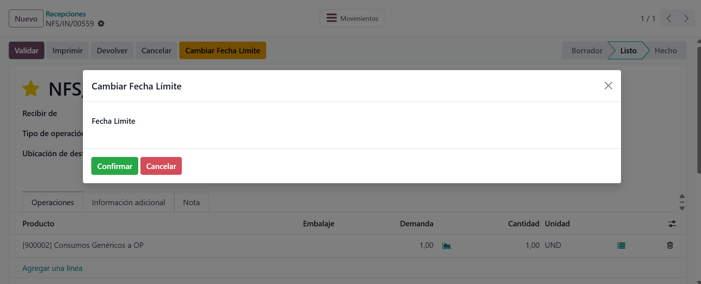
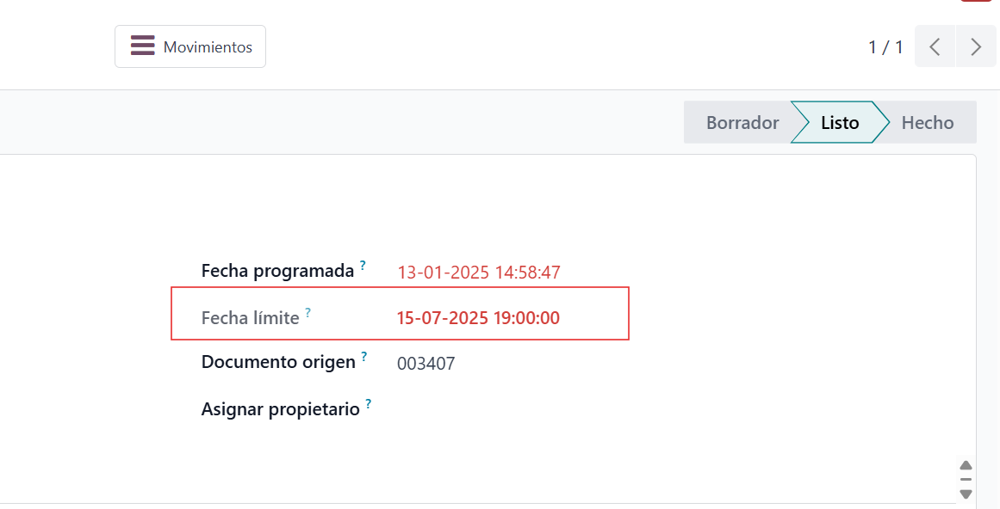

Este modulo permite modificar la fecha limite (scheduled_date) de los albaranes mediante un asistente (wizard).
A continuacion se muestran las diferentes etapas del proceso:
Boton para abrir el wizard
Wizard para seleccionar nueva fecha
Fecha limite actualizada en el albarán
Desarrollado por JMA SAS
Sitio web: https://sites.google.com/jmasas.com/jma